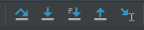

整型：int
3000000可写作3000_0000_0000
科学计数法：3.14=314*e-2
浮点型：float
Python中float默认是64位也就是双精度，可使用 numpy 等第三方库创建32位浮点数
布尔型：True和False
True表示1，False表示0，这是它们的本质
在 if等语句中判断条件时，只要不是0（False），就都为True
注意首字符必须大写，Python大小写敏感
字符串型：str
Python中没有字符的概念的概念，就算是一个字符，也是只有一个字符的字符串
Python中已被定义的字符串不可变，只能创建一个新字符串。内容相同的字符串是同一个对象，其id相同
字符串中空格也占一个长度
使用""或''标识，但注意有的地方，如JSON中只能用双引号
Python支持空字符串，用''表示，里面啥也没有，包括空格，长度为0
列表：List，用[]标识，可包含多个其它类型的数据
列表里套列表即多维列表，例如矩阵就可以用二维列表表示，可采用多 重索引取出元素，例如：list[1][3][1]
列表可a = [x1,x2...]直接创建，也可也使用list()构造函数把其它类型的转化为列表，还可以用类似a = [x*2 for x in range(5)]来创建
元组：Tuple，不可变类型，使用(,)标识，可使用tuple()或()创建，底层是字典实现，每个元素都是字典的键
元组中只有一个元素，则必须加上逗号，否则解释器将其解释为其它元素
元组的速度比列表快，且不可变，其它地方和列表比较类似
集合：Set，无序且元素不能重复，使用{}标识
字典：Dict，使用{}包括起来的多个键值对，无序可变
只有不可变数据类型（如元组、字符串、数值等）可以作为字典的key
键是不可变且唯一的，而值可以变且可以重复
my_dict = dict(key1='value1',key2='value2',key3='value3')
判断 key 是否存在于字典中：x in dict_name
for item in dict中的 item，指代的是一个键值对，但字典中的核心是键而不是值，直接打印输出的是 key 而不是 value
用a['key_name']可通过 key 查找对应的 value
用dict[key_name]=value可修改值或者增加键值对
21a = (1,2,3)2b = list(a)也称显式类型转换，使用各种函数强制转换类型
新变量 = 浮点数据 + 整型数据：这就是一种典型的隐式类型转换
隐式转换自动发生，且由较低类型转化为较高类型，以防止数据丢失
+ - * /加减乘除
注意/是浮点数除法，就算结果是整数也视为浮点型
//整数除法，得到一个整数商
% 模运算，也就是取余数
**幂运算，a**0.5就是给a开方
divmod(被除数, 除数)，返回(商,余数)这样一个元组
逻辑运算符优先级：not>and>or，可分别用! & |来表示
注意：当两边运算的对象都为 逻辑变量 时，关键字和符号的用法一致；但两边对象为数值时，! & |则分别化为 二进制 并对每一位进行逻辑运算。对每一位的逻辑运算也称位运算
在判断时，数字0、None、空的容器 均为 False，其余均为 True
^异或运算，也是一种逻辑运算，两个数同为0，异为1
>>和<<右移和左移，右移一位即除以2
\：续行符，注意后面不能跟任何东西
\t：制表符，相当于一个tab，常与print(end="\t")结合使用
\n：换行符
索引：index，也称偏移量。对于序列数据来说，index从0开始。
标准语法：a[start:end:step]
41a = '1244'2a[0:-2]3# 输出'124'4# [:]提取整个字符串Python的区间默认是左闭右开，即[1:3]中，索引为3的元素取不到
Python中使用缩进带表示代码中的层级关系，一个缩进为一个tab
Python大小写敏感
代码注释
41# 单行注释2'''3三个单引号或双引号可多行注释4'''Python 代码从上到下运行，就算后面出现了报错，前面也能正常输出
if __name__ == "__main__":语句下的代码块，在本模块被导入其它模块时，不自动运行
LEGB规则：Python 在查找名字时，按照：local（函数和类的内部） - enclosed（闭包，指外层嵌套函数） - global（全局变量） - build in（Python自带的特殊名字）
关键字：Python 中不可用于变量命名的、自带特殊用途的一些词，如def用于定义函数，with用于异常处理，return用于返回值
全局变量：在函数和类之外定义的变量，作用域为整个模块。全局变量会降低函数可读性，应当尽量少用
可在函数中用global x语句，这样就能在函数内部修改全局变量x的值（外部x也会变）
局部变量：在函数和类的内部定义的变量，只能在其内部使用
nonlocal：用来声明外层函数被的局部变量，使其能够修改外层函数的局部变量，只有在函数套娃时使用
浅拷贝：不拷贝子对象的内容，只拷贝引用，而引用本质是地址。因此操作浅拷贝得到的变量将影响原变量。copy()函数默认是浅拷贝
深拷贝：连子对象的内存也拷贝一部分，对子对象的修改不会影响原对象
程序必须有的结构，即代码从上到下运行
Python 使用if...elif...else：结构实现分支结构，if、elif 和 else 后面接判断条件的语句
只包含一个if的分支称为单分支结构，包含if..else的为双分支结构，多个分支嵌套为多分支结构
21num = int(input('请输入一个数字：'))2print(num if num < 10 else '数字太大！')111s = int(input('请输入你的分数：'))2if s >= 60:3 if s > 90:4 g = '优秀'5 elif 80 < s <= 90:6 g='良好'7 elif 60 <= s <= 80:8 g = '及格'9else:10 g = '不及格'11print('成绩是{0}，等级是{1}'.format(s,g))如果条件符合，则会反复执行循环体里的语句，每次执行完都会判断一下条件是否为True，如果是就继续执行。循环结构中至少应该包含改变条件表达式的语句，以使循环结束，不然就会变成一个死循环。
Python使用 for 和 while实现循环结构
for 循环
61for key,value in dict.item(): # dict是一个字典2 print(key,value)3
4for x in range(1,i+1):5 s += str.format('{0}*{1}={2}\t',i,x,i*x)6 print(s)while 循环
标准语法：while 循环条件，常用while True:，但此时必须设置可跳出循环的语句，如使用break
break：该关键字可跳出最近的一层循环
continue：跳出本次循环，即不进行第n个循环，而是进入n+1个循环
循环代码优化
尽量减少循环内部的计算量
嵌套循环中尽量减少内测循环中的计算量
局部变量查询较快，尽量使用局部变量
连接字符串尽量使用join()而不是+
input()：打印文本，并接收用户的输入
s = int(input('请输入数字：'))
print()：打印元素，如果没有任何参数，相当于换行符
len()：返回序列数据（字符串、字典、列表等）长度
range(start,end,step)：返回一个列表
41s = (x*2 for x in range(5))2# 生成器推导式生成的不是列表也不是元组，而是一个生成器对象，需要进一步转换才能访问，且只能访问一次3tuple(s)4(0, 2, 4, 6, 8)zip(list1, list2...)：将列表对应位置元素合并成元组，返回一个zip，无法直接打印，需要进一步转换或逐个取出元素
61a = [10, 20, 30]2b = [40, 50, 60]3c = [70, 80, 90]4d = zip(a, b, c)5list(d) #将zip进一步转换成序列便于访问6[(10, 40, 70), (20, 50, 80), (30, 60, 90)]eval(str)：去除字符串两端的引号，将其变为原本的数据。例如 JSON 数据就常常可以用此函数将字符串变回 JSON
pass：该关键字可进行占位，如定义函数时，可先不写函数体而先用 pass 代替，后面再来完成
ord()：把字符变成ASCII，chr()：把ASCII变成字符
is：判断两个对象是不是同一个，即判断对象id，其效率比==更高，后者默认调用__eq__方法
exit()和quit()：两者都可以退出Python解释器，即退出代码的执行
try:...except...finally:：异常处理语句，try代码块是可能出现异常的语句，except写出现指定异常后将执行的语句，可以存在多个except，但更宽泛的条件必须在更后方；finally是无论错误与否都会执行的语句，例如将文件关闭代码放在finally中
131a = input('请输入被除数：')2b = input('请输入被除数：')3try:4 a=int(a)5 b=int(b)6 c=a/b7 print(c)8except ValueError:9 print('数据类型有误')10except:11 print('其他异常')12finally:13 print('任务完成')str.replace(a,b,max)：使用b代替字符串中的a，max参数指定最多替换次数。注意原本的 str 仍然没有变化
repr(str)：完整打印出字符串的组成，包括换行符等
str.split(a)：使用指定字符串分隔字符串，返回包含多个字符串的列表
str.join(str2)：用指定字符串合并字符串
+：合并字符串，但效率比join()更低
str.find(str2)和str.rfind(str2)：查询字符串中指定字符串第一次（最后一次）出现的索引位置
str.count(str2)：计数指定字符串出现的次数
str.strip(str2)：去除首尾指定字符，直到首尾字符不再是str2为止。若无参数可去除空格、换行符等。
bin()、hex()、oct()：分别转化为二进制、十六进制、十进制
int()：转化为整数（十进制）
str.format()：格式化字符串
21a = '{0:>}dsds'2a.format(str2)print(f'{name} is {age}')：新的格式化字符串方法（Python3.6支持）
del list[index]：删除列表指定位置元素
list.append(x)：将指定元素插入到列表尾部
列表进行元素的插入尽可能在尾部操作，越往前效率越低
list.extend(list2)：将list2的所有元素并入list尾部
list.insert(index, x)：指定位置插入指定元素
list.remove(x)：删除首次出现的x
list.clear()：清空列表
list.pop([index])：删除并返回指定位置元素，默认是最后一个
list.index(x)：返回元素 x 第一次出现的位置
list.count(x)：计数 x 出现的次数
x in list：判断 x 是否位于list中
list.sort()：永久排序
sort(list)：返回排序后的新列表
list.reverse()：反转列表次序
list.copy()：返回对象浅拷贝，只复制对象的指针而不复制对象本身，修改值会相互影响
max()和min()：返回列表中的最大和最小值，只对数值列表有效
sum()：求和，只对数值列表有效
dict.fromkeys([])：创建值为 None 的字典，参数为 key 的列表
sorted()：可通过该函数对字典进行高级排序
31a = {'lwx':12,'99':88,'123':899,'sd':7}2b = sorted(a.items(),key=lambda x:x[1],reverse=False)3print(b)dict.get(key)：访问 key 对应的 value
dict.items()：返回一个包含元组的序列，一个元组即一个键值对
dict.values()：返回一个包含所有value的序列元素
像上面这种返回一个序列的函数，可用多个变量来接收，即序列解包：
e, d, f = s.values()
set = {1,2,3}：创建集合
set.add(4)：增加元素
c = set(b)：将元素 b（列表、元组等）转化为集合
set.remove(x)：删除元素 x
set.clear()：清空集合
可使用基本运算符对集合运算
a|b：求a和b的并集，等价于：a.union(b)
a&b：求a和b的交集，等价于：a.intersection(b)
a-b：求a和b的差集，等价于：a.difference(b)
函数是可重用的代码块，函数的作用，不仅可以实现代码的复用，更能实现代码的一致性（只要修改函数的代码，则所有调用该函数的地方都能得到体现）
函数名本质上是一个变量，和函数体的地址绑定。如果定义test()函数，且c = test，则c()和test()等价，他们指向堆（内存四区之一）中相同的一个东西，id也是一样的。其中()是函数调用的特征
内置函数
标准库函数（需要用import导入）
第三方库函数
自定义函数
51def func_name(x1, x2, *args, x4=None...): # 定义函数2 函数体3 [retrun x1]4 5a = func_name(1,2,x3=4,...) # 传参并调用函数，将返回值赋给ax1, x2, x4=None称为形式参数，仅做一个形式变量而没有真实的值，在调用函数时的1,2,4称为实际参数
基本数据类型当作实参传入函数时，因为是值传递，相当于拷贝了一份新的数据，对形参的更改不会影响实参；但列表、元组、字典等类型当参数传入时，形参会修改实参，因为这本质是地址传递
x4=None称为有默认值的参数，这里的含义是：如果不传入x3对应的值，则x3默认为None
调用时x4=4称为关键字参数，直接把关键字和值对应起来，可无视位置参数
*args称为可变参数，将多个参数收集到一个元组对象中。**kwargs也是可变参数，它是一个关键字参数，将多个参数收集到一个字典对象中。因为可变参数能够将值全部收集完，因此后面若还有参数，必须是关键字参数
31def test(first,*args,**kwargs)2 pass3test(1,2,3,4,a=3,b=4)这两个参数带 * 号是约定的写法
函数中可没有return语句。如果函数中有 return 语句，函数在运行过程中，只要遇到了return，则该函数立即停止并返回值，后面的函数代码均不会被执行结束。如果没有return则返回值为 None
可在函数体的第一行使用多行注释的方法，定义文档字符串，用来说明函数的作用，方便调用者的使用
变量注解：在定义函数时，对形参和返回值的类型加以限定，更加规范。变量注解是提示性的，就算使用时类型不符合也不会报错
11def func(a:int=10, b:list) -> int:
可使用 lambda 表达式生成匿名函数，它是一种简单的、在同一行中定义函数的方法，基本语法：lambda arg1,arg2...:表达式，其使用方法如下：
41p = lambda a, b: a+b2p(1,4) # 结果是 53# 或者直接定义并调用4(lambda a,b:print(a+b))(1,4)匿名函数没有名字，可以赋给某个变量再调用，也可也定义和调用在同一行完成。
自己调用自己的函数，每个递归函数必须包含两部分
终止条件：表示递归什么时候结束，一般用于返回值，不再调用自己
递归步骤：把第 n 步的值与第 n-1 步相关联
递归函数会创造大量函数对象，过量消耗内存和运算能力，在处理大量数据的时候需要谨慎使用
迭代和递归的区别：递归是重复调用函数本身实现循环，迭代是函数内某段代码实现循环
在函数内定义的函数，只能在函数内部调用，外部无法访问嵌套函数
f = open('xxx.txt','r',encoding='UTF-8')：打开文件示例
f.close()：使用上述方法打开的文件需要手动关闭
f.read()：读取整个文件内容，如果是大文件则谨慎使用
f.readLine()：从文件中读入一行内容
f.readLines()：从文件中读出所有行，以每行为一个元素，返回一个列表
f.write(str)：向文件中写入一个字符串或者字节流
31# 使用 with 关键字打开文件，不需要手动关闭2with open('xxxx.txt','r',encoding='UTF-8') as f:3 f.readLines()r只读模式，如果文件不存在，则返回异常 FileNotFoundError，默认值（如果不声明就默认这模式）
w覆盖写模式，文件不存在则创建，存在则完全覆盖原文件
x创建写模式，如果文件不存在则创建，如果存在就返回 FileExistsError
a追加写模式，文件不存在则创建，存在则在文件最后追加内容
b二进制文件模式
t文本文件模式，默认值。Python可以以文本和二进制两种方式处理文件，当以二进制打开时，读写按照字节流方式，如果是文本打开，则按照字符串
+一般与上述模式一起使用，在原功能的基础上追加同时读写功能
b、t、+可以和上面几种打开方式一起用，如wb就是二进制追加写模式，一般用于图片文件的写入
Python中一切皆对象，支持封装、继承和多态，这三者也是面向对象语言的三大特征
面向对象编程（OOP）就是抽象出某一操作或实体的属性与行为，将其封装到对象中，组织代码和数据的方式更加接近人的思维，从而提高了编程的效率
面向对象是面向过程的升华，最终仍然离不开面向过程，解决问题宏观上用面向对象，将其拆解成一个个小问题后最终还是要面向过程
类包含属性（变量）和方法（函数），前者也称状态，后者也称行为，两者统称 类的成员
把对象比作饼干，则类就是生产饼干的模具。当然，类本质也是一个对象，Python中一切皆对象
类通过关键字class来声明
可以不显式实例化类，而调用类的函数：MainGame().main()，这种情况下类已经实例化了，只是没有赋值给某个变量
对象是类的具体实例，当将类实例化并赋予特定的属性值时，就创造了一个对象，同一个类创造的对象和对象之间的属性不一定是相同的，但方法（对数据的操作）是相同的
注意就算类没有构造函数的输入，也需要()才能实例化，如a = 类名()
101class Student:2 def __init__(self,name,score):3 self.name = name4 self.score = score5
6 def say_score(self):7 print('{0}的分数是：{1}'.format(self.name, self.score))8
9s1 = Student('lwx',16) # 实例化类，产生对象s110s1.say_score() # 调用成员函数函数重载是可以定义多个名字相同，但参数数量、参数类型等存在差异，使得实际调用函数时，可根据参数的不同区分出调用的是哪一个函数
但在Python中，函数没有重载，只能以函数名来进行区分，因此函数名一定要唯一
Python是动态语言，可以动态地给类添加新的方法，或者动态地修改已有的方法
通过类定义数据类型的属性和方法，即将状态和行为打包在了一起，实现了对现实世界的描述，并将某些成员对外开放，某些成员不公开其内部细节，这就是封装
Python对类的成员没有严格的访问权限控制，这和其它面向对象语言有明显区别，即Python的封装不完整
虽然Python中没有严格的访问限制，但通常约定：
以两个下划线开头的属性或方法，如def __get_data(): 是私有的（private）
以单个下划线开头的属性或方法，如def _get():为受保护的(protected)类型的变量，也可也认为是私有的一种
类内部可以访问私有属性和私有方法
类外部不能直接访问私有属性或私有方法，比如不能直接通过.方法名()来调用，但可以在类内部设置一个函数作为接口
类外部可通过_类名__私有属性(方法)名来访问私有属性或私有方法
41class Dclass:2 __data = 03print(Dclass.__data) # 无法访问4print(Dclass._Dclass__data) # 能访问到数据魔术方法是Python中一类以__xxx__为格式的方法，本质上是简化的符号重载，可以实现和类有关的一些操作
__init__(self,...)被称为构造函数，用于初始化创建好的对象，其本质是给实例属性赋值
构造函数名称固定，必须是__init__(self,...)
第一个参数固定，必须是 self ，它代表每次实例化时，被产生的对象本身
通过实例名 = 类名(参数列表)来调用构造函数并返回一个实例化对象，其中参数列表所需参数和构造函数的形参相对应，除了 self
类似的有__new__()函数，它用于创建新的对象，但我们一般无需重新定义该对象
__del__()为Python中的析构函数，用于实现对象被销毁时所需的操作，和C++一样，一般不需要自己写
__len__()：计算长度
__add__()和__sub__()：加减法的重载，手动重写这两个方法可实现类的相加减
__new__()：创建对象方法，在构造函数之前创建对象
__str__()：字符串方法，通过该方法控制 某个类 转化成字符串的行为，如打印这个类的实例对象，该输出什么
111class Dclass:2 name = 'my_name'3 capacity = 54 def __str__(self):5 return Dclass.name6 def __eq__(self, other):7 # other 是一个默认的参数，指代另一个对象8 return self.capacity == other.capacity9
10s1 = Dclass()11print(s1) # 输出 name 这个属性的值__it__()：小于、大于符号的重载
__le__()：小于等于、大于等于符号的重载
__eq__(self, other)：==符号的重载，其中 other 指代另一个对象
__call__()：可将其看作一个普通函数，作用是将一个实例化的对象变为可调用的，就像函数一样，此时这个实例名字就是函数名，__call__()所写的东西就是这个函数的代码
对象分为类对象（未实例化）和实例化对象：
当解释器执行 class 语句时，因为类也是一个对象，因此实际上就会创建一个类对象。类可以不实例化而直接调用类方法：Student.print_score()
是类实例化之后产生的对象
有类属性和实例属性两种：
是位于构造函数之外的属性，类本身带有的，所有实例都能访问到，且值都相同，可通过类名.属性名 访问，也可也通过self.属性名来访问
位于构造函数内部的函数，一般是self.开头，每个实例的实例属性不尽相同
在Python中共有三种类型的方法：
第一个参数必须是实例本身，即将self参数作为第一个参数，但不需要传self对应的参数。实例方法也是使用频率最多的方法
使用self来操作实例属性，使用类名来操作类属性
只能通过实例对象去调用，尽管也可也通过类名间接调用：类名.方法名(self,...)
使用@classmethod修饰函数，且第一个参数必须是类本身，即将cls作为第一个参数，但不需要传入对应参数
可以使用 cls=类名 来操作类属性，但不能操作实例属性
可以通过实例对象或者类对象调用
使用@staticmethod修饰函数，第一个参数不固定，与普通函数一样，只是将该方法放到了类中而已，实际上与类无关
只能通过类名.来访问类属性
类对象和实例化对象都可以访问静态方法
241class Student:2 name = 'student' # 类属性3
4 def __init__(self, score): # 构造函数，是一个实例方法5 self.score = score # 以self开头的都是实例属性6
7 def print_score(self): # 参数第一个为self的为实例方法8 print(self.score)9
10 11 def class_method(cls): # 类方法12 cls.name = 'S' # 类方法可更改类属性，使用cls13 print(cls.name)14
15 16 def static_method(): # 静态方法17 print(Student.name) # 只能通过类名访问类属性18
19s1 = Student(10) # 实例化20s1.print_score() # 实例方法21
22Student.class_method() # 类方法直接通过类名调用23
24s1.static_method() # 静态方法继承可以让子类拥有父类的特性，从而提高代码的重用性，从设计上来说，是一种增量更新：在原本父类设计不变的情况下，可以增加新的功能，或者重写已有方法
Python 支持多重继承，一个子类可以继承多个父类，继承的语法格式为：class 子类类名(父类1, 父类2,...):
多继承的注意事项：如果有同名的类成员，则默认以继承顺序（从左到右）为优先级从高到低，即：先继承的保留，后继承的被覆盖
如果在类定义中没有指定父类，则默认父类是 object 类，即 object 类是所有类的父类，里面定义了所有类共有的默认实现，比如__init__函数
子类不重写父类的构造函数时，也会继承这个函数，子类实例化时会自动调用父类的构造函数
131class Father:2 def __init__(self,name):3 self.name = name4 def print_name(self):5 print(self.name)6
7class Son(Father):8 def get_name(self):9 return self.name10
11son = Son('sss') # 继承了父类的构造函数，因此需要传入参数12son.print_name() # 可直接使用父类的函数13son.get_name()子类重写构造方法时，实例化子类，就会使用自己的构造方法
子类如果重写了构造函数，又想要继承父类的构造方法，则可使用 super关键字
同一个方法由于调用对象的不同，会产生不同的行为，这就是多态
例如+在数值运算时，是将两个数相加，而str + str是，则是将两个字符串拼接起来，这是最简单的多态。此外，len()可求出字符串、列表、元组等长度，这是一种函数多态
多态增加了程序的灵活性，不论对象千变万化，使用者都用同一种形式去调用，并且也提升了程序的可拓展性
多态有两个必要条件：
存在类的继承
子类必须重写父类的某个方法
重写也称复写，重写父类方法即在子类定义一个名字和父类相同的方法，但内容不同
91class Father:2 def __init__(self,name):3 self.name = name4 def print_name(self):5 print(self.name)6
7class Son(Father):8 def print_name(self):9 return 'son'+self.name重写之后，子类的实例默认调用子类复写的成员，若此时还想用父类的成员（包含属性或方法），就需要使用特殊方法：
通过父类名.成员调用
使用super().成员调用
super()函数子类继承了父类，父类构造方法下的各种属性无法被继承，因为父类此时没有被初始化，因此那些属性也不存在
super()函数主要解决继承下的构造函数问题：使子类能写自己的构造函数，也能调用父类的构造函数；此外，它也能让子类调用父类的其他属性或方法
121class Parent:2 def __init__(self, x, y):3 self.x,self.y = x,y4 def get():5 print('father')6
7class Child(Parent):8 def __init__(self, x, y, z):9 super().__init__(x, y) # 调用父类的构造函数，使其实例化，并作为子类的一个参数10 self.z = z11 def get():12 super().get() # 调用父类的方法一般而言，super(子类名, self).__init__()和super().__init__()的含义是等价的，都是调用父类的构造函数，只不过前者显式指定了当前类和当前实例（self），只有在特殊情况下，如上下文可能存在歧义，才需要使用前者
super()函数提高了代码的可维护性和灵活性，更好地支持多重继承的场景
Python函数在传入数据时，并不会检查其类型，只要数据有某个方法，就能顺利使用。因此多态核心在于，有多个对象有着同名的方法，这样它们都可以调用某个方法。而要实现函数同名，就只能通过重写父类方法
251class Father:2 def __init__(self,name):3 self.name = name4 def print_name(self):5 return self.name6
7class Son(Father):8 def print_name(self):9 return 'son'+self.name10
11class Daugther(Father):12 def print_name(self):13 return 'daugther'+self.name14
15# 无论传入的是那种类型，只要有这个方法，就能调用，并根据自己的类型走自己写的路径16def pr_name(people):17 print(people.print_name())18
19son = Son('lwx')20daugther = Daugther('lwx')21father = Father('lwx')22
23pr_name(son) # 结果 sonlwx24pr_name(daugther) # 结果 daugtherlwx25pr_name(father) # 结果 lwx
第三方库也称第三方模块，是别人预先写好的、具有特定功能的库。Python 下载第三方库的同时，还会下载这个库所有的依赖库，比较方便
pip install package_name
conda install package_name：Anaconda环境下载第三方库
常见导入包的方法，一般放在Python代码的顶部
from A import B：其中A代表一个模块（Python文件），而B代表模块中的一个类
import A：A代表一个Python模块
import A as a：A代表一个模块，a 是为了方便给A起的别名，一般是约定俗成的简写
import A.b：导入模块A中的一个函数或类
因为某些包的下载服务器在国外，可能被墙了，这时候可以使用国内下载源
镜像源的使用：pip install -i 源URL package_name，例如：pip install -i https://pypi.tuna.tsinghua.edu.cn/simple gensim
time.time()：返回一个浮点数表示的当前时间，人类看不懂
time.ctime(x)：将以浮点数表示的时间 x 转化为人类看得懂的年月日格式
time.sleep(x)：将代码在此暂停 x 秒
和 time 库的功能基本一致
31from datetime import datetime2current_time = datetime.now()3print(current_time)Github开源的中文分词库，目前性能最好的中文开源分词库
jieba.lcuts(s)：对中文字符串 s 进行词语分割，返回一个列表，每个切割成的词语当作列表的元素
jieba.cut(s)：返回一个生成器对象，方便使用循环取出中文词组，用list()对这个生成器强转，则结果和 lcut 完全相同
生成伪随机数，只要随机数种子不变，就可复原产生的随机数
random.seed()：初始化随机数种子，默认值为当前系统时间
random.random()：生成一个[0.0, 1.0) 之间的一个随机小数
random.randint(a, b)：生成一个 [a, b] 之间的随机整数
random.sample(pop, k)：从 pop 中随机选取 k 个元素，以列表类型返回
random.choices(seq,w_seq,k)：返回参数序列 seq 的随机几个元素，w_seq 为列表形式的权重，和为10，k为取样次数
random.choice(seq)：返回 序列 seq 的一个随机元素
正常环境下常用 pip 来管理第三方包，它本身也是一个包
pip install package_name：下载最新版本的包，-U 参数为下载最新包，-i 可指定下载源
pip install --upgrade package_name：升级包
pip unstall package_name：卸载包
os 库是Python标准库，提供通用的、基本的操作系统交互功能，常用路径操作、进程管理、环境参数等几类
os.mkdir()：创建指定路径（文件夹），若已存在则报错
os.makedirs()：可递归地创建多层级目录，且存在时会自动跳过
os.path.isfile()：判断指定的路径是否为文件
os.path.isdir()：判断指定路径是否为文件夹
os.path.exists()：如果目录或文件存在则返回True，否则返回False
os.remove()：删除路径指定的文件，注意参数不能是目录
os.listdir()：返回指定文件夹中包含的文件或文件夹的名称列表
os.path.join(data_dir, class_name)：将 data_dir 和 class_name 两个路径组合起来，形成一个完整的路径
进程管理：启动系统中的其他程序
环境参数：获得系统软硬件信息等
re 库是Python 标准库中的模块，它提供了对正则表达式的支持，在处理数据时非常有效，例如：re.split()
正则表达式：一种用于匹配和操作文本的工具，由一系列字符和特殊字符组成
一个二维数据可视化库，使用时一定要注意数据必须是数字类型才能画图
231import matplotlib.pyplot as plt2
3# 设置中文字体4plt.rcParams['font.sans-serif'] = ['SimHei']5
6time = [...]7
8temperature_max = [...]9temperature_min = [...]10
11# marker参数用于设置折线点的形状12plt.plot(time,temperature_max,label='Temperature_max',color='red',marker='o')13plt.plot(time,temperature_min,label='Temperature_min',color='blue',marker='o')14
15plt.xlim(0, max(time)) # 设置 x 轴范围从 0 到 x 的最大值16plt.ylim(0, max(temperature_max)) # 设置 y 轴范围从 0 到 y 的最大值17
18plt.xlabel('Time')19plt.ylabel('Temperature')20plt.title('15日最低最高气温')21plt.legend()22plt.grid(True) # 显示网格线23plt.show()其中plt.plot代表折线图，plt.bar代表柱状图，plt.scatter代表散点图，plt.pie代表饼图
一个基于matplotlib的数据可视化库，能制作比 matplotlib 更美观的可视化图像
该库主要用来对csv文件进行处理。csv 文件是一个有首行的、数据以逗号分隔的类似表格的文件
131# csv 文件的写入2with open('data.csv','w',encoding='UTF-8',newline='') as f:3 writer = csv.DictWriter(f,fieldnames=list1) # 创建writer，并指定首行的标签，list1是存标签名（首行）的列表4 writer.writeheader() # 写入首行5 writer.writerows(key_value) # 写入每一行，key_value是存着小单元的列表，每个小单元就是csv的一行6
7# csv 文件的读出8with open('data.csv') as f: # 不需要加打开方式9 reader = csv.reader(f) # 用csv.reader(f)读出内容，存到reader 迭代器中10 header_row = next(reader) # 使用next取出reader的首行11 data = []12 for line in reader: # reader每一行就是csv文件的一行（自动去除了\n等符号）13 data.append(line) # line中存的数据均为字符串一个用于科学计算的库，底层由 C / C++ 编写，速度非常快
numpy 中一般以数组为运算对象
81import numpy as np2array1 = np.array([1,2,3]) #创建初值为[1,2,3]的数组3array2 = np.zeros((3,2)) #创建3*2的全零数组（先行后列）4array3 = np.ones((3,2)) #创建3*2的全1数组5array1.shape() #获取数组的尺寸6array4 = np.arange(3,7) #创建从3到7的数组，左开右闭。升序降序均可7array5 = np.linspace(0,1,5) #返回从0~1等间距的5个数8array6 = np.random.rand(2,4) #生成尺寸为2*4的随机数组，数的范围为0~1241# 相同尺寸数组，可直接四则运算，相同位置加减乘除2a = np.array([1,2,3])3b = np.array([3,45,6])4print(a*b) # 结果为 [3 90 18]5
6# 矩阵乘法运算：dot 函数，等价于 A@B7A = np.array([[1, 2], [3, 4]])8B = np.array([[5, 6], [7, 8]])9result = np.dot(A, B)10# dot函数，若两者为向量，就是向量计算内积11
12B = A*5 # 数组与数做运算，等同于数组中每个数和该数做运算13
14np.sin(a)15np.cos(a)16np.log(a)17np.power(a,2) # 求 a 的平方18# 以上都是对矩阵中每个元素单独运算19
20a.min()或a.max()：返回数组中最小或最大的元素21a.argmin()或a.argmax()返回数组中最小或最大元素的索引22a.sum()返回数组所有数据的和23a.mean()或np.median()返回数据的平均值24a.var()、a.std()返回数据的方差或标准差广播运算：两个不同尺寸的数组可以直接运算，但必须满足：其中至少一个数组的某个维度为1，或者两个数组中有一个维度相同。广播运算本质是将某个维度的元素复制到其他维度上
该参数在许多 numpy 函数中都可以见到，主要作用是指定运算的维度，如拼接的维度。axis = 0 代表按行操作，axis = 1代表列，以此类推
41C = np.array([[1,2,3,4,6],2 [2,4,5,7,9]])3print(C.mean()) # 结果为：4.34print(C.mean(axis=0)) # 结果为：[1.5 3. 4. 5.5 7.5]和Python 切片语法一致，行列索引均从零开始，同样是左闭右开。如 a[:][0:2]表示获取所有行、第0~1列的数据。
注意：若是手动插入了一个维度，那么必须使用a[:,0:2]这样的语法，防止出错
基于 numpy 的数据分析库，提供了大量便于处理数据的函数
因为基于 numpy，因此 numpy 很多数据结构，如np.NaN代表缺失值，Pandas也可以当缺失值
DataFrame：数据框，二维数据，大小可变，类似于表格，既有行索引也有列索引，可以看作由 Series 组成的字典
Series：数组，一维，由数据和索引组成，类似字典，可理解为数据帧中的某一列
DataFrame中，一般行索引就是位置索引，而列索引是给定的标签。当然，可以行列都给标签，这时候要想再使用位置索引，就需要使用df.iloc[]这个函数
切片和 Python 类似，但若直接使用标签索引，则均为闭区间；若使用位置索引，则和Python一样是左闭右开
下面以df代表DataFrame，s1代表Series，
import pandas as pd：导入pandas包
df = pd.DataFrame({'a':a,'b':b,'c':c})：创建dataframe，指定了标签和数据，a、b、c可以是 numpy 的一维数组
s1 = pd.Series([10,20,30,40,50],index=['a','b','c','d','e'])：根据索引创建Series，索引为可选参数
s1['a'] = 20或s1[0] = 20：根据索引修改数据
s1.isnull()、s1.dropna()、s1.fillna(0)：判断哪些值是缺失值、删除缺失值、用0填充缺失值
如果df.dropna()，则会直接删除有缺失值的那一行
df['列名']：dataframe读取某一列，得到的是一个 Series
df[['列名']]：也是读取一列，但得到的是只有一列的数据框
df[列索引][行索引]：注意当取出 df 中的数据时，列索引在前，本质上是先取出一个 series，再进一步取出数据
pd.read_csv(path)：读取指定 csv 文件，返回一个 dataframe
df.head()：查看前五行
df.columns=[...]：设置列标签名称
df[df['age']>15]：过滤条件，将age一列大于15的数据全部筛选出来，其中df['age']>15将返回一个布尔型的序列
df2.iloc[0][0]：按位置索引获取数据，无论有没有标签索引，常用
df.loc['a']['b']：获取 行标签为 a、列标签为 b 的数据，也就是行索引在前
df.groupby('hour')：按照 小时 这一列进行分组，分组后返回一个 DataFrameGroupBy对象，里面有多个分组，相同 hour 的行将分到同一组，通常是为了对每个组的数据进行进一步的操作
一个常见语法是：df.groupby('部门')['工资'].mean()，即先按部门分组，随后拿出工资这一列，最后计算均值，结果返回是不同部门的工资均值
df.sort_values(by=[...])：按照指定列标签进行排序，列表里可选择多个标签
使用Python 代码打开网页文件
91import webbrowser2
3# 打开本地 HTML 文件4filepath = 'path/to/local.html'5webbrowser.open_new_tab(filepath)6
7# 打开 URL8url = 'https://www.example.com'9webbrowser.open_new_tab(url)一个轻量级的Python web框架，方便构建应用程序。在设计完 web 的基本框架后，可利用 falsk 获取前端提交的数据，然后将服务处理结果返回前端
环境（environment，env）即Python代码的运行环境，应该包含以下信息：
Python解释器的位置：python.exe
Python库的位置：去哪找并导入安装的第三方库，主要是 Lib 文件夹，包括其中的 site-packages
可执行程序的位置：Scripts文件夹，如 pip 等是命令行可运行的可执行文件
创建环境，就是要创建或指定以上信息
在Python 中，不同环境下的第三方库不通用
环境变量是操作系统中一个具有特定名字的对象，包含了一个或多个应用程序将使用的信息。当你要求系统运行一个程序而没有告诉它路径时，系统除了在当下目录去找此程序外，还会在 环境变量的 Path 的路径中去寻找
用户设置环境变量可以更好的运行程序，不过环境变量数量太对，将会导致系统变慢
虚拟环境（Virtual Environment，venv）：是Python环境的一个副本
要得到这样一个副本，需要单独找个文件夹存起来，还要给它取名，这个文件夹的名字就是虚拟环境的名字。在这个文件夹下有：
一个Scripts目录
一个Lib目录
其它文件
注意虚拟环境和普通环境有两点不同
python.exe也放在了Scripts目录下
Lib目录下只有site-packages目录
Python自带venv模块，可用来创建虚拟环境，也可以用第三方程序如anaconda创建
activate 虚拟环境名：激活指定虚拟环境
deactivate：关闭当前虚拟环境
激活只不过把虚拟环境的Scripts目录临时添加到了PATH环境变量的第一位，即搜索程序的时候，先找到了虚拟环境而不是普通环境，因此用的都是虚拟环境中的东西；这也解释了为什么把python.exe放在Scripts目录下：只需要添加一个路径到环境变量中即可
安装不同的包、不同版本的包，防止因为版本问题导致工程出现问题
建议对于每个要使用不同库的大工程，一个工程创建一个环境，如主环境（base）、深度学习环境等，以牺牲存储空间（每个环境都要重新下载包）来换取稳定性
Anaconda 是一个基于 conda 的 Python 环境管理程序，便于创建和管理多个环境
打开anaconda prompt
激活虚拟环境（路径是安装anaconda3的路径）：activate 虚拟环境名
使用conda install 包名 来安装第三方库，如果是安装多个包，则多个包名之间用空格隔开
conda env list：打印该路径下所有环境，带星号*表示是默认的环境
conda uninstall 包名：删除某个库，但是这个命令经常出问题，可使用conda remove 包名代替。另外，使用 pip命令安装的包，也需要使用 pip 卸载
conda create -n 虚拟环境名 python=x.x：创建一个虚拟环境，并指定 Python 版本
可以不指定python版本，就相当于只新建一个文件夹并配置一下
deactivate：退出当前虚拟环境
conda remove -n 虚拟环境名 --all：删除指定虚拟环境，注意参数顺序
多行注释：Ctrl+/
单行及整体缩进（通用）：tab
整体解缩进：shift+tab
强制暂停正在运行的代码：Ctrl+C
Ctrl+shift+f：简体繁体切换（通用）
Ctrl+A：全选（通用）
Ctrl+alt+I：格式代码或数据，使其结构变得更加清晰
断点：Debug模式下，程序运行到此处将暂停，并展示当前的变量情况。在某行最前面点击即可打出断点（红色圆点标记），空行或注释无法打断点
下方的调试控制台处可以看到当前所有变量的情况，此外还有一些按钮：

分别表示：
步过：常用的单步调试，即按照代码运行顺序调试
步入：若该行代码调用了函数、类等，则进入到这些代码中
单步执行我的代码
步出：从函数中跳出，继续执行
运行到光标处：这里的光标指断点，也就是跳转到下一个断点
当断点调式运行到某一行处发现异常时，会停下来并在行头用一个红色雷电标识
调试时，可以鼠标右键，点击强制运行到光标处，可以运行到指定位置（鼠标光标位置）
json（JavaScript Object Notation）是一种轻量级的数据交换格式，易于程序员阅读和编写，也易于计算机解析和生成，是JavaScript的子集
只能使用双引号
使用{}表示一个 json 对象，它类似字典，可包含多个键值对，键值对又可继续嵌套；使用[]表示一个 json 数组
json 本质为一个字符串，只不过有特定的格式，将引号去掉就可用特定方法解析
借助 json 这个库
91import json2a = [2,3,4,5]3jsondata = json.dumps(a)4
5with open('xxx.json','w') as f:6 json.dump(a,f)7 8with open('xx.json','r') as f2:9 text = json.loads(f2)json.dumps()：可以将列表、字典等Python对象编码成JSON字符串
json.dump()：可以更方便地将数据写入 json 文件
json.load()：读取 json 数据
借助Pyinstaller这个第三方库，可生成exe文件
但需注意，这个文件不是真正的二进制程序，它本质是将 py 文件、依赖的库、Python解释器等全部打包到了一起，运行时仍然需要启动Python解释器
坏处是打包可能使运行速度变慢，好处是不需要执行的机器安装各种依赖包即可运行
安装Pyinstaller：pip install Pyinstaller
使用pyinstaller：cmd中执行命令：pyinstaller 文件名可生成含有exe文件的文件夹
pyinstaller常见的可选参数：
-F：打包Python程序为单个可执行文件
-D：打包Python程序为一个文件夹
-n：指定打包后生成文件的名称
Jupyter Notebook是以网页形式打开交互式代码编写程序，可以在网页页面中编写代码和运行代码，代码的运行结果也会直接在代码块下显示，直观方便
pip install jupyter，不过更常用的是使用Anaconda，它会自动安装Jupyter
通过Anaconda安装的，直接点击Jupyter快捷方式启动
使用 pip 安装的，在 cmd 中跳转到 当前解释器的 Scripts 目录下，输入jupyter notebook，即可启动
首先需要创建或打开一个 jupyter 文件，其拓展名为 .ipynb
jupyter的每一行都是独立区域，可选择其为代码区域或文本解释区域，每一行都可以写一段代码，然后运行
定义某个函数，然后在另一个函数中将这个函数名当作参数传进去，并在另一个函数中完成这个函数的调用，该函数即被称为回调函数，该行为称为函数回调
通过函数回调，可以用另一个函数来控制这个函数的调用：
61def func1():2 print('pig')3def func2(x):4 x()5func2(x=func1)6# 运行结果为：pig从根目录下一级级往下的路径
相对本文件的路径
./xx：表示xx文件在本文件的同一级，爬虫若指定该路径，则把所有东西放在xx下面
./可以不写，单个 . 代表此文件夹
//xx：表示xx文件在文件夹的里面（下一级）
../xx：表示xx文件在本文件的上一级目录，也就是两个..代表上一级
pybind11是一个只有头文件的轻量级库，能轻松实现 C++ 和 Python之间的绑定和互通
对于每个project，都需要将 pybind11 clone 到项目中，作为第三方库进行调用
git clone https://github.com/pybind/pybind11
一般新建一个文件夹专门放第三方库，然后将pybind11放进去
clone 到本地后，删除 .git 和 .github 文件夹
原理：将 C++ 代码编译乘 .pyd 文件，也就是 Python 的扩展库，然后直接 import 导入Python即可
注意：这里由于是调用 C++ 的类和函数，因此含有 main() 函数的文件就可以不编译了，直接在 Python 中写运行逻辑即可
编写 CMakeLists.txt 文件，需要加入pybind11的位置以及需要绑定的源文件，若是单个源文件可直接写名字，若是多个源文件则可按照下面的格式在 {} 中写上，以空格隔开
31add_subdirectory(.../pybind11) # 加入pybind11路径2# 第一个参数是被编译成Python模块的名字，第二个是要编译的 C++源文件3pybind11_add_module(module_name ${compiler_list})在源文件中添加 pybind11 的头文件
#include<pybind11/pybind11.h>
由于在CMakeLists.txt中加入了路径，因此可以找到pybind11模块
在要 build 的源文件中绑定函数和类
关于函数的绑定
其中 m 指代一个被绑定的对象，可以是函数也可也是类
81int func(){ // 函数的定义2 return 0;3}4PYBIND11_MODULE(HelloW,m){5 // 这里 HelloW 是要绑定的函数名称6 // 第一个是Python里的函数名称，第二个是要绑定的源文件函数名称，第三个是函数的描述（可选）7 m.def("plusk",&func,"A function");8}关于类的绑定
绑定类时，除了加上pybind11的头文件，还要加上py的命名空间
201using namespace std;4namespace py = pybind11; // 这里py命名空间别忘了5class Plusk{6 int y;7public:8 Plusk(int input){9 cout<<"hell"<<endl;10 }11 int add(int x){12 int res = x+y;13 return res;14 }15};16PYBIND11_MODULE(HelloW,m){17 py::class_<Plusk>(m,"Plusk")18 .def("add", &Plusk::add) //类中每个函数都需要这样绑定19 .def(py::init<int>()); //构造函数的绑定，其中<int>表示返回的是int类型20}在 CMakeLists.txt 中指定是构建release类型的项目
set(CMAKE_BUILD_TYPE Release)
检查 VSCode 的状态栏，使用VS的amd64编译器，目标是当前的项目，CMake指定为Release
进行build，得到一个build文件夹，打开其中的release文件夹，有一个项目名称.pyd的文件，这就是Python的扩展库，可将其移动到第三方库位置或者Python文件位置，即可直接 import 导入，并使用类和函数
91cmake_minimum_required(VERSION 3.26)2project(HelloW)3SET(compiler_list plusk.cpp)4set(CMAKE_BUILD_TYPE Release)5
6# 将pybind11的位置加入，防止找不到这个第三方库7add_subdirectory(externlib/pybind11)8# 第一个参数HelloW是被编译成Python模块的名字，第二是要添加的C++源文件9pybind11_add_module(HelloW plusk.cpp)
原理：将Python代码或脚本嵌入到C++代码中，并且借助Python的解释器进行解释
这里同样借助pybind11，借助其中一个叫embed的头文件
编写CMakeLists.txt
81cmake_minimum_required(VERSION 3.26)2project(C++_with_Python)3add_subdirectory(.../pybind11)4add_executable(C++_with_Python C++.cpp)5# 下面是用于链接目标（target）与库文件或其他目标的命令6# 第一个参数为要链接的目标的名称，可以是可执行程序、静/动态库等7# 第二个表示链接项仅对当前目标有效，不会传递给依赖的目标；第三个表示要链接的库文件或目标，这里要把embed文件链接8target_link_libraries(C++_with_Python PRIVATE pybind11::embed)编写C++源文件
141using namespace std;4namespace py = pybind11;5int main(){6 // 初始化Python解释器，并保持激活状态7 py::scoped_interpreter guard{};8 // 引入Python的模块的语法9 py::module math = py::module::import("math");10 // 由于Python中处处皆对象，所以无论返回什么都是object类型的，math里面有一个attr（方法，叫“sqrt”），后面再传参11 py::object result = math.attr("sqrt")(25);12 // 由于Python和C++数据类型不同，必须经过转换。这里是将object使用cast强转成float类型13 cout<<"answer is "<<result.cast<float>()<<endl;14}
进行编译，选择 Unix 下的GCC，先后cmake和make，得到可执行程序，再再终端中执行该程序，若得到结果，即调用成功
注意：
C++调用Python加载第三方库时，无法使用from...import...之类的语法，也不能链式调用，例如要使用wv中的similarity，必须先获取wv，而不能使用wv.similarity
编译后的依赖问题：依赖是不会被编译进可执行程序的，例如模型。若使用相对路径，最后需要保证源文件和可执行程序，相对于依赖的路径是没有改变的
可以先写一个Python脚本，在里面写好所有需要在Python里实现的函数或类，然后将其 import 到C++ 中。注意，导入包后包中的代码仍然会自动执行一遍
不基于pybind11，而是使用Python提供的C++头文件与库文件，将Python作为一个库来调用
首先找到Python安装路径下的两个文件夹，是Python的API，用于C++的调用：
21...\Python\Python310\libs2...\Python\Python310\include
编写CMakeLists.txt
81cmake_minimum_required(VERSION 3.26)2project(py2c)3include_directories("./")4# 指定头文件的路径，并指定要连接的库文件路径5include_directories("C:/Users/SupernovaGo/AppData/Local/Programs/Python/Python310/include")6link_directories("C:/Users/SupernovaGo/AppData/Local/Programs/Python/Python310/libs")7add_executable(py2c p2c.cpp)8target_link_libraries(py2c PUBLIC python310) # 如果链接python310出错，就换成python3源文件中无参函数的调用
注意：包含<Python.h>时可能会报错，但只要cmake中路径写对了，是可以通过编译的
351using namespace std;4int main()5{6 Py_Initialize(); // 初始化python解释器7 if (!Py_IsInitialized()) // 如果初始化失败8 {9 cout << "Python init failed" <<endl;10 return 1;11 }12 // 导入sys模块，用于添加所依赖的路径13 PyRun_SimpleString("import sys");14 // 把模块所在的目录加入到系统路径15 PyRun_SimpleString("sys.path.append('./')");16 // 导入python模块，不用写后缀名，返回指向该模块的指针17 PyObject* module1 = PyImport_ImportModule("test1");18 if (module1 == nullptr)19 {20 cout << "module not found" <<endl;21 return 1;22 }23 // 获取函数对象，第一个参数为模块的指针，第二个为函数名称24 PyObject* func = PyObject_GetAttrString(module1,"say");25 if (!func || !PyCallable_Check(func))26 {27 cout<< "func not found" <<endl;28 return 1;29 }30 // 调用函数，这个函数是无参的，直接用空指针作为参数31 PyObject_CallObject(func, nullptr);32 // 结束调用，关闭Python解释器33 Py_Finalize();34 return 0;35}有参函数的调用
有参函数的调用，需要手动构建参数元组
121// 给python函数传递参数，传递均用元组打包2// 创建Python参数对象，2代表有2个参数3PyObject* args1 = PyTuple_New(2);4// Py_BuildValue实现参数类型的转换，args1代表传递给的参数元素5// 0表示第一个参数，"i"表示该参数为int类型，5表示参数的值6PyTuple_SetItem(args1,0,Py_BuildValue("i",5));7PyTuple_SetItem(args1,1,Py_BuildValue("i",4));8// 调用函数，参数为我们构建的元组9PyObject* res = PyObject_CallObject(func, args1);10int result;11PyArg_Parse(res,"i",&result); // 将Python的数据转化成C++类型，"i"代表转化为int12cout << "返回值是" << result <<endl;注意 PyArg_Parse 最后一个参数必须带 &，也就是引用
Python类的调用
221// 从module1中传进去类Person，命名为cls2PyObject* cls = PyObject_GetAttrString(module1,"Person");3if (!cls)4{5 cout << "class not found" <<endl;6 return 1;7}8// 构建构造函数的参数，以实例化这个类，"s"代表string，"f"代表float9PyObject* args1 = PyTuple_New(2);10PyTuple_SetItem(args1, 0, Py_BuildValue("s","jack"));11PyTuple_SetItem(args1, 1, Py_BuildValue("i", 18));12// 实例化这个类13PyObject* obj1 = PyObject_CallObject(cls,args1);14// 从obj中获取函数go15PyObject* func1 = PyObject_GetAttrString(obj1,"go");16if (!func1 || !PyCallable_Check(func1))17{18 cout<<"func not found"<<endl;19 return 1;20}21// 如果这个函数要传参，则步骤和上面的一致22PyObject_CallObject(func1,nullptr);注意文件之间的依赖问题：如果cpp源文件中引入了py文件，而py本身不是库，在链接时不会加入到exe文件中，因此仍然需要依赖于py文件
注意源文件中的这一行代码：
PyRun_SimpleString("sys.path.append('./')");
这行代码添加的是当前文件夹目录，则编译得到的exe会在当前文件夹寻找依赖
DeprecationWarning：一般是所用的库、函数已经更新，建议使用新版本而弹出这个警告，实际上不影响运行，引入warnings库可防止出现报错
不能轻易将函数名以test开头，这样pycharm看到这个函数会自动调用测试包，这样就不是运行而是测试模式。测试模式的特点：自定义函数面前会出现一个绿色的小三角，表示可以直接点击运行测试
不能将python文件名直接命名为任何模块的固定的名字，不然导入的时候很有可能就导入错误，显示在模块中找不到方法
ValueError: invalid literal for int() with base 10报错：不能直接将带有小数点的数字字符串转化为整数
关于文件路径问题：Windows下通常是\表示文件层级，但代码中可能将其认为是转义符号从而报错，可采用\\或/
OSError[WinError5]：没有权限安装Python模块时会出现该问题，可在 pip 命令最后加上 --user
从外部范围隐藏变量：一般是函数里有个变量（局部变量），然后外部（包括导入的库）也有有个全局的同名变量，导致解释器可能识别错误，重命名即可
append是浅拷贝，使用时要注意这个问题
open()函数默认是GBK编码而不是UTF-8，若文件出现编码报错，则优先指定encoding='utf-8'
无法加载文件xxxxx，因为在此系统上禁止运行脚本：报错。这个问题在Pycharm、powershell中均可能出现，原因是电脑策略为restricted。解决方法：以管理员身份运行cmd或powershell，输入set-executionpolicy remotesigned，然后按A或Y，最后按回车即可
'utf-8' codec can't decode byte：该问题是出现了无法进行转换的二进制数据，一般只需要将decode方法的第二个参数改为'ignore'即可（默认为'strict'）：content = response.content.decode('UTF-8','ignore')